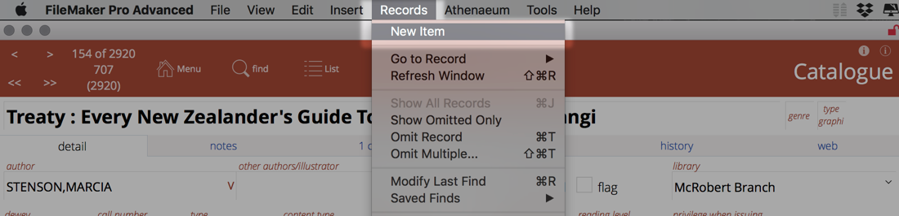
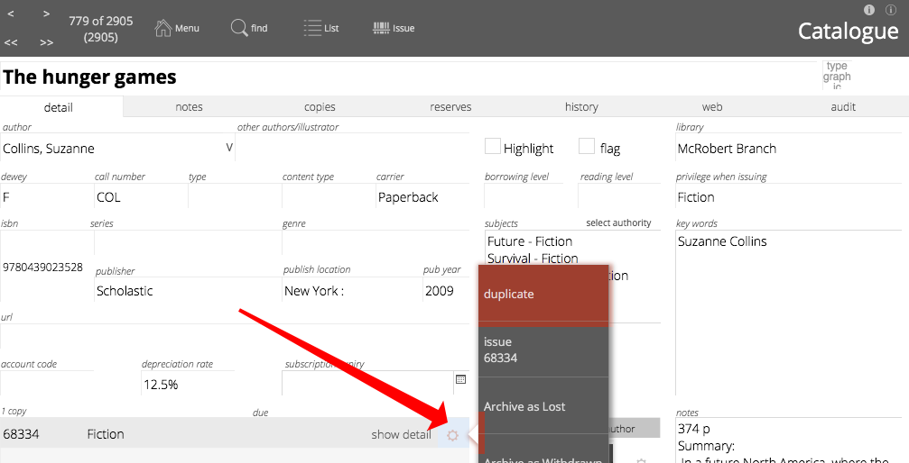
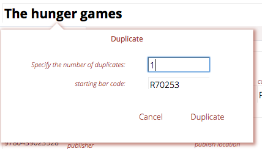

Adding Entries to your Catalogue
- Adding a Copy Manually
- The title already exists
- The title does not exist and you have entered your SCISData details
- The title does not exist and you have not entered SCISData log in or you did not enter an ISBN
- You don't wish to attach a Copy to the Title
- Minimum Recommended Catalogue Fields
- Purchase details
- Duplicating an Item
- Edit in Title view or Copy view?
- Adding with QuickMARC™
- Process SCIS and Send to Catalogue
- Review SCIS
- Review Open Library
- Review Library of Congress
- About items in the MARC module
- Periodicals
Each entry in the catalogue will have a title and a copy (item) attached to that title.
However, a title does not have to have an attached copy (e.g. you wish to catalogue details of an internet resource).
Entries can be added to the catalogue manually or using QuickMARC.
Adding a Copy Manually
If you have configured your main menu to show the "New Copy" or "New Item" button, click that. ("New Copy" and "New Item" are synonyms.)
Or, navigate to the catalogue and click on Command->New button at the top of the list view:
Or, navigate to the Title detail view and select Records->New Item (the ISBN of the current item will be pre-loaded for you):

Or, navigate to the copies list and click on Command->New button at the top of the list view:
At the new copy dialog:
If you have "libraries" defined, then you can select a library to which the item/title will be added. If you don't have any libraries defined, then the pop-up menu is not visible.
- specify the library the copy belongs to if you have defined libraries
- enter the bar code you have assigned to the item and click OK. If there is no bar code, you can just let Athenaeum auto generate a bar code
- type or scan in the ISBN code if there is one (omitting any hyphens and other punctuation). If you don't have an ISBN/ISSN, simply tab to the next field.
The title already exists
If the ISBN you have entered is already in your catalog (i.e. the title with that ISBN already exists), a new copy is automatically attached to that title.
The title does not exist and you have entered your SCISData details
Athenaeum will query SCISData for the ISBN using the SCISData API credentials you entered into admin.
If there is a match, the title details are loaded into the catalogue and a new copy (representing your current entry) is added awaiting extra detail:
If there is no match
- a blank catalogue (title) entry is created
- the ISBN you previously entered is stored
- the default borrower privilege set in Admin is used
- a new copy attached to the blank title
The copy: - uses either the bar code you previously entered or the next bar code number in the sequence. - has the purchase date set to the current date
The title does not exist and you have not entered SCISData log in or you did not enter an ISBN
- a blank catalogue (title) entry is created
- the default borrower privilege set in Admin is used for that title
- a new copy attached to the blank title
The copy: - uses either the bar code you previously entered or the next bar code number in the sequence. - has the purchase date set to the current date
You don't wish to attach a Copy to the Title
Because Athenaeum has already created a title with an attached Copy, simply dispose the Copy immediately, using the Archive + Reason (keep title) button.
Minimum Recommended Catalogue Fields
You should always enter a Title.
We recommend that as a minimum you also enter:
- author,
- subject,
- type,
- issue privilege.
And for each copy detail, we recommend a minimum of:
- bar code (unique of course) where applicable
- purchase amounts,
- purchase date,
- location.
If your subjects are unstructured (Athenaeum allows structured and or unstructured subjects), then they should be simple appropriate words or phrases, not stories (save your stories for the notes or custom fields).
Subjects may also be constrained to strict authority entries (click the authority button). These subjects should be formal subject headings as provided by Library of Congress, SCISData.com or a simplified version thereof. These are visible as “hyperlinks” on OPAC search screens.
Keywords are less formal subjects or topics entered into the keywords field. You can add other information into the custom fields and are designed to assist your searchers find items with less formal terms. (Subjects, keywords and custom fields 1 and 2 are searched with "fast find" searches.)
Purchase details
There are three main things you will normally consider when it comes to value:
- how much did you actually pay for the item;
- how much is it normally worth (these will be different if you received a discount, for example); and
- the "replacement" cost that the library patrons will see.
Purchase detail is attached to each Copy.
| Field | Description |
|---|---|
| Date purchased | When the item was purchased. If you don’t know, it is usually worth making an educated guess |
| Supplier | From whom the item was acquired |
| Supplier name | Name of the suppler |
| Suppliers button | This will open the list of suppliers. You can add new suppliers from the main menu->nav->supplier and then clicking new entry |
| Amount Paid | The amount actually paid for the item |
| Unpaid amount description | A description such as “discount”, “donation”, “book fair sale”, etc., indicating why there is an unpaid component to the value of the item |
| Unpaid amount | An unpaid component contributing to the total worth of the book, that was not actually paid |
| Depreciation rate | A percentage (a number between 0 and 1) indicating how rapidly the item in question is to be depreciated |
| Value at date | The depreciated value of the item as at the current date |
| Total | Paid + unpaid amounts |
| Replace $ | The amount to charge for a replacement |
- the replace $ is a calculation set in Admin->Customisation->Catalog Defaults. if you don't want the replace amount to calculate automatically, then set the replace formula to amount_replace*
Duplicating an Item
On the detail screen for the item, click on the Duplicate button.
 
You are prompted for the number of duplicates (default is one) and whether these items are copies of the same title or not, i.e. they share reserves, reviews, and so on.

Enter the number of duplicates to create1. The next bar code is entered already, though you can change that if you wish.
All information except the bar code is identical. Make any changes necessary and repeat the process as required.
Edit in Title view or Copy view?
When you are viewing a title and editing the details of the attached copies, sometimes it is easier to use the Copies list view.
The easiest way to do this is to click the "list in copies" button.
Adding with QuickMARC™
QuickMarc will attempt to retrieve information about items from either Curriculum Corporation's SCIS service, the National Library of New Zealand's SchoolsCat service or the Open library.
The first two require log in accounts that must be pre-entered in Admin. The Open Library does not.
Press the "q" key on the keyboard at the main menu. Or, if you have configured your main menu to show the QuickMARC button, click that.
If you have defined libraries, you will be required to select which library the new entries will be linked with


Either import a MARC file you have received from your supplier or scan the ISBNs into the ISBN field using your bar code scanner and then choose which service you want to query.
note: the blue process buttons will not be visible until you "commit" the ISBNs by clicking outside the ISBN entry field
Process SCIS and Send to Catalogue
The Process SCIS and Send to Catalogue button will query SCISData.com, retrieve matching records and book covers (if any) and immediately add them to the catalogue
Review SCIS
The Review SCIS button will query SCIS and leave the results in the MARC module. You can review the results and amend them if you wish before adding them to the catalogue.
when first setting up the MARC module, use this option so that you can experiment with the settings and easily reprocess the MARC data to test
Review Open Library
The Review Open Library button will query openlibrary.org for matching ISBNs and retrieve the information that it can find, including images associated with the ISBN.
It will also include a URL associated with the item, if there is one or the URL for the direct link to the details web page for the item at openlibrary.org.
The processed data will stay in the MARC module until you send it to the catalogue.
Review Library of Congress
Will check the Library of Congress (LoC - www.loc.gov) for matching ISBNs and retrieve and process what it can find.
The processed data will stay in the MARC module until you send it to the catalogue.
About items in the MARC module
The MARC module is a temporary holding place for information.
Athenaeum will not delete that information until you instruct it to. We recommend that you periodically clear out the MARC records by going to the list view, clicking the "all" button and then the "delete temporary MARC records" button.
Wheelers
You can manually import Wheelers MARC file through the MARC module and you can also load references to your Wheelers titles in your ePlatform.
Manual import
When you purchase items from Wheelers, you will receive a MARC file that you can import and process with the MARC module. The process is identical to manually importing a MARC file, except that you choose "Import Wheelers MARC" from the command menu.
Wheelers ePlatform
Inside Athenaeum, go to support resources and review the short video "Wheelers ePlatform import (02:43)", that shows you how to load the API resources:
When you subscribe to the Wheelers ePlatform, you request an ID and a password for the "API". You will receive a "client ID" and a "secret". These are stored in Admin. You can check that you entered this correctly using the "Wheelers health check button".
When you have done this, a new navigation item appears "Wheelers API".
You can now load the links and references to your catalogue (we suggest adding a "Wheelers eBook" library to Athenaeum) allowing library patrons to search your eBooks.
So that patrons can see the entries on your web portal, don't forget to go to your Wheelers settings and allow embedding:
Periodicals
If you have items that are added regularly to the catalogue, such as magazine subscriptions, you can add "periodical" properties to a title. When you do so, Athenaeum will – during server "morning maintenance" - add copies to such titles according to the rules you define, on the recurring interval specified.
For the purposes of demonstration, let's assume you have a subscription to New Zealand Geographic magazine.
First, enter the main details of the title (title, main subjects, publisher, dewey, notes, etc.).
Then, add your first Copy to the title.
note: the periodicals feature requires that you have at least a single copy attached to the title - if you don't have any copies, the periodical fields will not be visible
Enter at least the basic information for the Copy that is common to all copies of your periodical, such as normal location, price, issue rules, etc.

Then click on the periodical/audit tab.
Now set the parameters for the periodical:
The parameters are:
- date next copy
- the date that this periodical will next be processed
- until
- the latest date that this periodical can be processed
- quantity
- how many copies will be added on the "date next copy"
- frequency
- integer defining the number of periods to elapse between each processing
- period
- the elapsed time, day, week, fortnight, month, year
- allocate bar code
- whether or not to assign a bar code do the new copy
So, in the above example, when the Server morning maintenance script is run on 10 September 2018 (or as soon after if it was missed for some reason), 2 copies of New Zealand Geographic will be added to the title and will not have a bar code.
After processing, the new copy is added and the next date for processing is updated:
You can now edit the details of the copy, notes, as appropriate.
note: the periodicals process duplicates the last copy attached to the title
The notes are duplicated and the words "duplicated date periodical x y" are added where the date is the medium format date the duplication was performed, x is the frequency and y is period. This is simply to advise how the entry was added and you can of course delete that note if you wish.
You can manually run the server morning maintenance by navigating to the Maintenance Tab in admin and clicking the button:
-
e.g. if you already have 1 copy and at the duplicate dialog you enter 3, this will create 3 new duplicates of the copy, leaving you with 4 copies in total. ↩